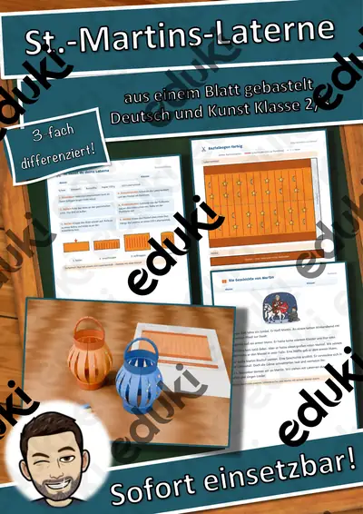
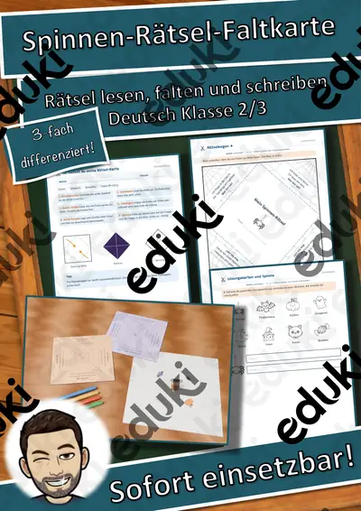
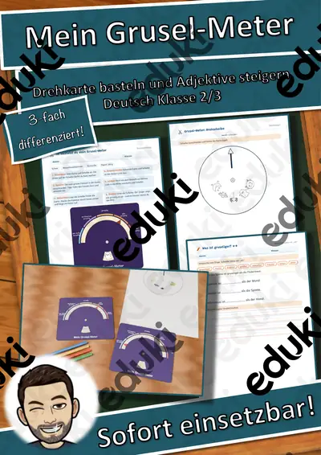
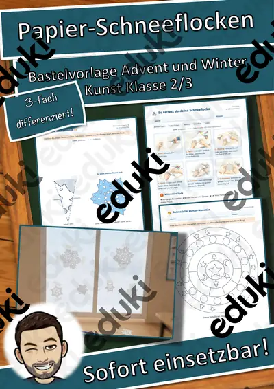
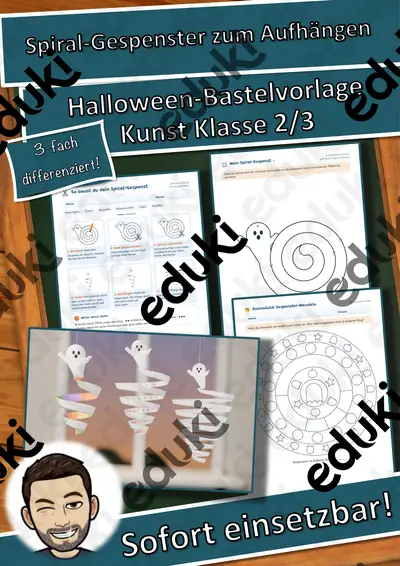
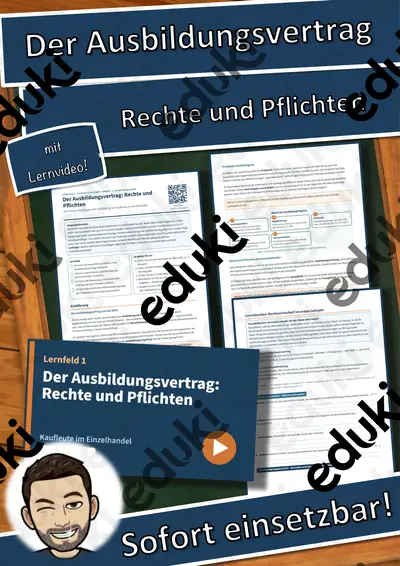

Lesespaziergang Materialpaket: 3 Geschichten, 6-fach differenziert – Herbst, Advent, Winter (Klasse 1–4, DaZ)

Lesespaziergang Vögel am Futterhaus – 6-fach differenziert mit Bildkarten, Sternchenaufgaben und Audio (Klasse 1–4)

Lesespaziergang Auf dem Weihnachtsmarkt – 6-fach differenziert mit Bildkarten, Sternchenaufgaben und Audio (Klasse 1–4)

Lesespaziergang Ein Nebeltag im November – 6-fach differenziert mit Bildkarten, Sternchenaufgaben und Audio (Klasse 1–4)

Lesespaziergang Nikolausabend: Stiefel, Sterne, Plätzchenduft – 8 Stationen in 3 Lesestufen mit Hörfassung (Klasse 1–2, DaZ)

Lesespaziergang Tiere im Winter: Pit, der Igel, sucht ein Bett – 8 Stationen in 3 Lesestufen mit Hörfassung (Klasse 1–2, DaZ)

Lesespaziergang Laternenzeit: Linas Laterne – 8 Stationen in 3 Lesestufen mit Hörfassung (Klasse 1–2, DaZ)

Der Faschingsladen – Rollenspiel Kombinatorik und Rechnen mit Geld, 3-fach differenziert (Klasse 2)

Lesespaziergang DaZ: Wir backen – Wortschatz mit Rätseln, 3-fach differenziert (Klasse 1–4)

Lesespaziergang DaZ: Spielen im Schnee – Wortschatz mit Rätseln, 3-fach differenziert (Klasse 1–4)

Lesespaziergang DaZ: Gemüse – Wortschatz mit Rätseln, 3-fach differenziert (Klasse 1–4)

Lesespaziergang DaZ: Sankt Martin – Wortschatz mit Rätseln, 3-fach differenziert (Klasse 1–4)

Materialpaket Rechenwelten im Winter für die 3. Klasse: 8 Mathe-Rollenspiele, 3-fach differenziert (Weihnachtsbäckerei, Lichterpark, Eisbahn & mehr)

Materialpaket Rechenwelten im Winter für die 2. Klasse: 6 Mathe-Rollenspiele, 3-fach differenziert (Weihnachtsmarkt, Kinderkino, Lebkuchen & mehr)

Materialpaket Feste im Winter für die 2. Klasse: 6 Lesespurgeschichten mit Rätselaufgaben (Sankt Martin, Nikolaus, Advent, Weihnachten & Silvester)

Das Weihnachtspostamt – Rollenspiel Rechnen mit Euro und Cent, gemischte Schreibweise, 3-fach differenziert (Klasse 2)

Igel im Laubnest – Klappnest basteln mit Sachtext Winterschlaf, 3-fach differenziert (Tiere im Herbst, Klasse 1/2)

St.-Martins-Laterne aus einem Blatt – falten, einschneiden, rollen, mit Martinsgeschichte, 3-fach differenziert (Klasse 2/3)

Herbst-Klappkarte Eichhörnchen – Figurenkarte basteln mit Sachtext, 3-fach differenziert (Tiere im Herbst, Klasse 2/3)

Flatter-Fledermaus am Stab – bewegliche Bastelfigur mit Sachtext, 3-fach differenziert (Halloween/Herbst, Klasse 2/3)

Der Kürbis von innen – Klapp-Kürbis basteln und beschriften, 3-fach differenziert (Halloween/Herbst, Klasse 1/2)

Halloween-Ziehkarten – Präpositionen sichtbar machen: über, vor, neben, auf, 3-fach differenziert (Klasse 1/2, DaZ)

Spinnen-Rätsel-Faltkarte – Halloween-Rätsel lesen und schreiben, Pop-up-Spinne, 3-fach differenziert (Klasse 2/3)

Mein Grusel-Meter – Halloween-Drehkarte basteln, Adjektive steigern und vergleichen, 3-fach differenziert (Klasse 2/3)

Halloween-Hüpffiguren – 6 Bastelvorlagen mit Federkugel, Steckbrief und Geschichte, 3-fach differenziert (Klasse 1/2)

Halloween-Armbanduhr aus Papier – Uhrzeit lernen mit Bastelvorlage, 3-fach differenziert (Klasse 2/3)

Halloween-Handpuppen – Bastelvorlage mit Sachtext und Puppentheater, 3-fach differenziert (Klasse 1/2)

Fingerpuppen Wintertiere – Bastelvorlage mit Sachtext und Sprechaufgaben, 3-fach differenziert (Klasse 1/2)

Wimpelkette Winter – Bastelvorlage mit Wintermotiven, Buchstaben WINTER und eigenen Wimpeln, 3-fach differenziert (Klasse 1–4)

Advents-Häuserstadt – Klassen-Adventskalender zum Basteln mit 24 Adventsaufgaben, 3-fach differenziert (Klasse 1–4)

Papier-Schneeflocken falten und schneiden – Winter-Bastelvorlage mit Sachtext, 3-fach differenziert (Klasse 2/3)

Fensterlaterne Sankt Martin – Laterne basteln mit Lesetext zur Legende, 3-fach differenziert (Klasse 1–3)

Spiral-Gespenster zum Aufhängen – Halloween-Bastelvorlage mit Lesetext, 3-fach differenziert (Klasse 2/3)

Gespensterhaus aus meiner Hand – Halloween-Bastelvorlage mit Lesen und Schreiben, 3-fach differenziert (Klasse 1/2)

La panadería de jengibre – Rollenspiel Einmaleins und Teilen auf Spanisch, 3-fach differenziert (Klasse 2)

Lesespaziergang DaZ: Im Klassenzimmer – Wortschatz mit Rätseln, 3-fach differenziert (Klasse 1–4)

The Gingerbread Bake Shop – Rollenspiel Einmaleins und Teilen auf Englisch, 3-fach differenziert (Klasse 2)

Die Geschenkfabrik – Rollenspiel Körper, Ecken, Kanten und Flächen, 3-fach differenziert (Klasse 2)

Der Bratapfelstand – Rollenspiel Einmaleins mit Geld, Euro und Cent, 3-fach differenziert (Klasse 2)

Lesespaziergang: Frühblüher im Garten und im Wald – 3-fach differenziert (★/★★/★★★), Klasse 2–4

Lesespaziergang: Verkleiden und Feiern im Fasching – 3-fach differenziert (★/★★/★★★), Klasse 2–4

Lesespaziergang: Tiere in Eis und Wüste – 3-fach differenziert (★/★★/★★★), Klasse 2–4

Lesespaziergang: Obst und Gemüse im Winter – 3-fach differenziert (★/★★/★★★), Klasse 2–4

Lesespaziergang: Spuren im Schnee – 3-fach differenziert (★/★★/★★★), Klasse 2–4

Die Schneemann-Werkstatt – Rollenspiel Längen m und cm, 3-fach differenziert (Klasse 2)

Lesespaziergang: Plätzchen backen im Advent – 3-fach differenziert (★/★★/★★★), Klasse 2–4

Das Kinderkino im Winter – Rollenspiel Einmaleins und Verteilen, 3-fach differenziert (Klasse 2)

Am Bahnhof in den Winterferien – Rollenspiel Uhrzeit und Zeitspannen, 3-fach differenziert (Klasse 2)

Lesespaziergang: Zugvögel im Herbst – 3-fach differenziert (★/★★/★★★), Klasse 2–4

Lesespaziergang: Blätter und Bäume im Herbst – 3-fach differenziert (★/★★/★★★), Klasse 2–4

Die Lebkuchen-Backstube – Rollenspiel Einmaleins und Teilen, 3-fach differenziert (Klasse 2)

Lesespaziergang: Vorräte der Tiere im Herbst – 3-fach differenziert (★/★★/★★★), Klasse 2–4

Lesespaziergang: Tiere im Winterwald – 3-fach differenziert (★/★★/★★★), Klasse 2–4

Die Bude am Weihnachtsmarkt – Rollenspiel Rechnen mit Geld, Euro und Cent, 3-fach differenziert (Klasse 2)

Lesespaziergang: Igel im Herbst – 3-fach differenziert (★/★★/★★★), Klasse 2–4

Die Gruselparty-Werkstatt – Rollenspiel Einmaleins und Verteilen, 3-fach differenziert (Klasse 2)

Lesespaziergang: Halloween-Nacht im Kürbisgarten – 3-fach differenziert (★/★★/★★★), Klasse 2–4

Rechnen im Winter-Café – Rollenspiel Rechnen mit Geld, 3-fach differenziert (Klasse 2–4)

Ostern – Bräuche rund ums Osterfest – Lesespurgeschichte mit Rätselaufgaben (Klasse 2)

Weihnachten in anderen Ländern – Bräuche rund um die Welt – Lesespurgeschichte mit Rätselaufgaben (Klasse 2)

Silvester und Neujahr – Bräuche zum Jahreswechsel – Lesespurgeschichte mit Rätselaufgaben (Klasse 2)

Advent – warten auf Weihnachten – Lesespurgeschichte mit Rätselaufgaben (Klasse 2)

Die Weihnachtsgeschichte – Herberge, Hirten, Sterndeuter – Lesespurgeschichte mit Rätselaufgaben (Klasse 2)

Nikolaus von Myra – Legende und Brauch – Lesespurgeschichte mit Rätselaufgaben (Klasse 2)

Kastanien zählen – Zehner und Einer bündeln – Lesespurgeschichte mit Rätselaufgaben (Klasse 2)

Sankt Martin – vom Teilen und Helfen – Lesespurgeschichte mit Rätselaufgaben (Klasse 2)

Der Spielplatz – Lesespurgeschichte mit Rätselaufgaben (Klasse 2)

Das Stadion – Lesespurgeschichte mit Rätselaufgaben (Klasse 2)

Das Skigebiet – Lesespurgeschichte mit Rätselaufgaben (Klasse 2)

Das Krankenhaus – Lesespurgeschichte mit Rätselaufgaben (Klasse 2)

DaZ-Wortschatz Materialpaket: 6 Wortfelder differenziert A1/A2/B1 – Hörszenen (QR), Lückentexte, Rollenspiele, Sprechkarten
DaZ-Wortschatz Körper und Gesundheit – differenziert A1/A2/B1: Hörszene (QR), Lückentexte, Rollenspiel

DaZ-Wortschatz Unterwegs in der Stadt – differenziert A1/A2/B1: Hörszene (QR), Lückentexte, Rollenspiel
DaZ-Wortschatz Mein Zuhause – differenziert A1/A2/B1: Hörszene (QR), Lückentexte, Rollenspiel

DaZ-Wortschatz Kleidung und Wetter – differenziert A1/A2/B1: Hörszene (QR), Lückentexte, Rollenspiel
DaZ-Wortschatz Essen und Trinken – differenziert A1/A2/B1: Hörszene (QR), Lückentexte, Rollenspiel

DaZ-Wortschatz In der Schule – differenziert A1/A2/B1: Hörszene (QR), Lückentexte, Rollenspiel

Wortgitter-Suchsel: Ritter und Burg – Wortgitter – Klasse 1–4

Wortgitter-Suchsel: Dinosaurier – Wortgitter – Klasse 1–4

Wortgitter-Suchsel: Weltall – Wortgitter – Klasse 1–4

Wortgitter-Suchsel: Am Meer – Wortgitter – Klasse 1–4

Wortgitter-Suchsel: Wetter – Wortgitter – Klasse 1–4

Wortgitter-Suchsel: Fahrzeuge – Wortgitter – Klasse 1–4

Wortgitter-Suchsel: Piraten – Wortgitter – Klasse 1–4

Wortgitter-Suchsel: Sport – Wortgitter – Klasse 1–4

Wortgitter-Suchsel: Ostern – Wortgitter – Klasse 1–4

Wimmel-Werkstatt Tiere im Winter Materialpaket: 3 Einheiten – Sprachförderung und Sachwissen mit Wimmelbildern (Grundsch

Wimmel-Werkstatt Tiere im Winter Wimmel-Werkstatt Tiere im Winter – Einheit 3: Tierspuren und Winterfell im Schnee – Spr

Wimmel-Werkstatt Tiere im Winter Wimmel-Werkstatt Tiere im Winter – Einheit 1: Winterschlaf, Winterruhe und Winterstarre

Wimmel-Werkstatt Tiere im Winter Wimmel-Werkstatt Tiere im Winter – Einheit 2: Standvögel und Zugvögel im Winter – Sprac

Himmel und Hölle: Haustiere – Himmel und Hölle – Klasse 1–4

Wort-Bild-Karten: Ritter und Burg – Wort-Bild-Karten – Klasse 1–4

Wort-Bild-Karten: Dinosaurier – Wort-Bild-Karten – Klasse 1–4

Lesen, Malen und Kleben: Familie – Lesen und Malen – Klasse 1–4

Wort-Bild-Karten: Weltall – Wort-Bild-Karten – Klasse 1–4

Lesen, Malen und Kleben: Fahrzeuge – Lesen und Malen – Klasse 1–4

Sprechanlässe: Im Restaurant – Sprechanlässe – Klasse 1–4

Sprechanlässe: Hobbys – Sprechanlässe – Klasse 1–4

Sprechanlässe: Familie – Sprechanlässe – Klasse 1–4

Sprechanlässe: Wilde Tiere – Sprechanlässe – Klasse 1–4

Sprechanlässe: Fahrzeuge – Sprechanlässe – Klasse 1–4

Ich habe, wer hat? Ritter und Burg – Lese-Schleifen – Klasse 1–4

Ich habe, wer hat? Dinosaurier – Lese-Schleifen – Klasse 1–4

Lesen, Malen und Kleben: Wilde Tiere – Lesen und Malen – Klasse 1–4

Wortspiele: Sag es nicht! Weltall – Klasse 2–4

Wortspiele: Sag es nicht! Dinosaurier – Klasse 2–4

Wortgitter-Suchsel: Sommer – Wortgitter – Klasse 1–4

Klammerkarten: Haustiere – Klammerkarten – Klasse 1–4

Wort-Bild-Karten: Am Meer – Wort-Bild-Karten – Klasse 1–4

Lesen, Malen und Kleben: Kleidung – Lesen und Malen – Klasse 1–4

Sprechanlässe: Im Zoo – Sprechanlässe – Klasse 1–4

Ich habe, wer hat? Am Meer – Lese-Schleifen – Klasse 1–4

Wortspiele: Sag es nicht! Am Meer – Klasse 2–4

Himmel und Hölle: Sport – Himmel und Hölle – Klasse 1–4

Lesen, Malen und Kleben: Im Zoo – Lesen und Malen – Klasse 1–4

Sprechanlässe: Kleidung – Sprechanlässe – Klasse 1–4

Sprechanlässe: Ostern – Sprechanlässe – Klasse 1–4

Ich habe, wer hat? Wetter – Lese-Schleifen – Klasse 1–4

Wortspiele: Sag es nicht! Wetter – Klasse 2–4

Wortspiele: Sag es nicht! Ritter und Burg – Klasse 2–4

Lesen, Malen und Kleben: Im Restaurant – Lesen und Malen – Klasse 1–4

Lesen, Malen und Kleben: Ostern – Lesen und Malen – Klasse 1–4

Sprechanlässe: Frühling – Sprechanlässe – Klasse 1–4

Ich habe, wer hat? Fahrzeuge – Lese-Schleifen – Klasse 1–4

Wortspiele: Sag es nicht! Fahrzeuge – Klasse 2–4

Wortspiele: Sag es nicht! Familie – Klasse 2–4

Wortgitter-Suchsel: Familie – Wortgitter – Klasse 1–4

Himmel und Hölle: Körper und Sinne – Himmel und Hölle – Klasse 1–4

Klammerkarten: Körper und Sinne – Klammerkarten – Klasse 1–4

Wort-Bild-Karten: Fahrzeuge – Wort-Bild-Karten – Klasse 1–4

Wort-Bild-Karten: Familie – Wort-Bild-Karten – Klasse 1–4

Lesen, Malen und Kleben: Frühling – Lesen und Malen – Klasse 1–4

Sprechanlässe: Sommer – Sprechanlässe – Klasse 1–4

Sprechanlässe: Wetter – Sprechanlässe – Klasse 1–4

Memory: Ritter und Burg – Bild-Wort-Spiele – Klasse 1–4

Ich habe, wer hat? Familie – Lese-Schleifen – Klasse 1–4

Wortspiele: Sag es nicht! Im Zoo – Klasse 2–4

Wortgitter-Suchsel: Im Zoo – Wortgitter – Klasse 1–4

Wortgitter-Suchsel: Wilde Tiere – Wortgitter – Klasse 1–4

Himmel und Hölle: Märchen – Himmel und Hölle – Klasse 1–4

Wort-Bild-Karten: Im Zoo – Wort-Bild-Karten – Klasse 1–4

Lesen, Malen und Kleben: Sommer – Lesen und Malen – Klasse 1–4

Sprechanlässe: Bienen – Sprechanlässe – Klasse 1–4

Domino: Ritter und Burg – Bild-Wort-Spiele – Klasse 1–4

Ich habe, wer hat? Im Zoo – Lese-Schleifen – Klasse 1–4

Wortspiele: Sag es nicht! Wilde Tiere – Klasse 2–4

Klammerkarten: Märchen – Klammerkarten – Klasse 1–4

Wort-Bild-Karten: Wilde Tiere – Wort-Bild-Karten – Klasse 1–4

Lesen, Malen und Kleben: Bienen – Lesen und Malen – Klasse 1–4

Sprechanlässe: Kochen und Backen – Sprechanlässe – Klasse 1–4

Ich habe, wer hat? Wilde Tiere – Lese-Schleifen – Klasse 1–4

Wortspiele: Sag es nicht! Bienen – Klasse 2–4

Wortgitter-Suchsel: Bienen – Wortgitter – Klasse 1–4

Himmel und Hölle: Zirkus – Himmel und Hölle – Klasse 1–4

Wort-Bild-Karten: Bienen – Wort-Bild-Karten – Klasse 1–4

Lesen, Malen und Kleben: Kochen und Backen – Lesen und Malen – Klasse 1–4

Sprechanlässe: Obst und Gemüse – Sprechanlässe – Klasse 1–4

Memory: Dinosaurier – Bild-Wort-Spiele – Klasse 1–4

Ich habe, wer hat? Bienen – Lese-Schleifen – Klasse 1–4

Wortspiele: Sag es nicht! Piraten – Klasse 2–4

Kinderyoga: Stationenlernen mit 12 Stationen

Koordination und Reaktion: 48 Aufgabenkarten Turnhalle

Lesen, Malen und Kleben: Wetter – Lesen und Malen – Klasse 1–4

Weihnachten: Das große Gemeinschaftsbild – 30 Felder, ein Kunstwerk für die ganze Klasse

Wortgitter-Suchsel: Körper und Sinne – Wortgitter – Klasse 1–4

Wort-Bild-Karten: Piraten – Wort-Bild-Karten – Klasse 1–4

Lesen, Malen und Kleben: Obst und Gemüse – Lesen und Malen – Klasse 1–4

Sprechanlässe: Im Garten – Sprechanlässe – Klasse 1–4

Domino: Dinosaurier – Bild-Wort-Spiele – Klasse 1–4

Ich habe, wer hat? Piraten – Lese-Schleifen – Klasse 1–4

Wortspiele: Sag es nicht! Körper und Sinne – Klasse 2–4

Sommerferien: Das große Gemeinschaftsbild – 30 Felder, ein Kunstwerk für die ganze Klasse

Geburtstag: Das große Gemeinschaftsbild – 30 Felder, ein Kunstwerk für die ganze Klasse

Klammerkarten: Zirkus – Klammerkarten – Klasse 1–4

Wort-Bild-Karten: Körper und Sinne – Wort-Bild-Karten – Klasse 1–4

Sprechanlässe: Berufe – Sprechanlässe – Klasse 1–4

Memory: Weltall – Bild-Wort-Spiele – Klasse 1–4

Ich habe, wer hat? Körper und Sinne – Lese-Schleifen – Klasse 1–4

Wortspiele: Sag es nicht! Ostern – Klasse 2–4

Halloween: Das große Gemeinschaftsbild – 30 Felder, ein Kunstwerk für die ganze Klasse

Wortgitter-Suchsel: Frühling – Wortgitter – Klasse 1–4

Himmel und Hölle: Weltall – Himmel und Hölle – Klasse 1–4

Wort-Bild-Karten: Sport – Wort-Bild-Karten – Klasse 1–4

Lesen, Malen und Kleben: Im Garten – Lesen und Malen – Klasse 1–4

Sprechanlässe: Ritter und Burg – Sprechanlässe – Klasse 1–4

Domino: Weltall – Bild-Wort-Spiele – Klasse 1–4

Memory: Am Meer – Bild-Wort-Spiele – Klasse 1–4

Ich habe, wer hat? Sport – Lese-Schleifen – Klasse 1–4

Wortspiele: Sag es nicht! Kleidung – Klasse 2–4

Bewegtes Lesen: Lesen mit Laufen, Würfeln und Rätseln

Schulanfang: Das große Gemeinschaftsbild – 30 Felder, ein Kunstwerk für die ganze Klasse

Muttertag: Das große Gemeinschaftsbild – 30 Felder, ein Kunstwerk für die ganze Klasse

Klammerkarten: Weltall – Klammerkarten – Klasse 1–4

Wort-Bild-Karten: Ostern – Wort-Bild-Karten – Klasse 1–4

Lesen, Malen und Kleben: Berufe – Lesen und Malen – Klasse 1–4

Sprechanlässe: Dinosaurier – Sprechanlässe – Klasse 1–4

Domino: Am Meer – Bild-Wort-Spiele – Klasse 1–4

Ich habe, wer hat? Ostern – Lese-Schleifen – Klasse 1–4

Blitzlesen: Lesefächer und häufige Wörter

Ostern: Das große Gemeinschaftsbild – 30 Felder, ein Kunstwerk für die ganze Klasse

Wortgitter-Suchsel: Bauernhof – Wortgitter – Klasse 1–4

Himmel und Hölle: Ritter und Burg – Himmel und Hölle – Klasse 1–4

Wort-Bild-Karten: Frühling – Wort-Bild-Karten – Klasse 1–4

Wort-Bild-Karten: Sommer – Wort-Bild-Karten – Klasse 1–4

Lesen, Malen und Kleben: Haustiere – Lesen und Malen – Klasse 1–4

Sprechanlässe: Weltall – Sprechanlässe – Klasse 1–4

Memory: Piraten – Bild-Wort-Spiele – Klasse 1–4

Ich habe, wer hat? Frühling – Lese-Schleifen – Klasse 1–4

Ich habe, wer hat? Sommer – Lese-Schleifen – Klasse 1–4

Fasching: Das große Gemeinschaftsbild – 30 Felder, ein Kunstwerk für die ganze Klasse

Valentinstag: Das große Gemeinschaftsbild – 30 Felder, ein Kunstwerk für die ganze Klasse

Wortgitter-Suchsel: Hobbys – Wortgitter – Klasse 1–4

Wortgitter-Suchsel: Kleidung – Wortgitter – Klasse 1–4

Wort-Bild-Karten: Kleidung – Wort-Bild-Karten – Klasse 1–4

Lesen, Malen und Kleben: Sport – Lesen und Malen – Klasse 1–4

Ich habe, wer hat? Bauernhof – Lese-Schleifen – Klasse 1–4

Wortspiele: Sag es nicht! Berufe – Klasse 2–4

Leseroute Herbstwald: Stationen zum Lesen und Verstehen

Silvester & Neujahr: Das große Gemeinschaftsbild – 30 Felder, ein Kunstwerk für die ganze Klasse

Nikolaus: Das große Gemeinschaftsbild – 30 Felder, ein Kunstwerk für die ganze Klasse

Domino: Piraten – Bild-Wort-Spiele – Klasse 1–4

Winterzeit-Spiele: Winter-Domino: Die Bild-Wort-Kette – Klasse 1–4

Wortgitter-Suchsel: Im Restaurant – Wortgitter – Klasse 1–4

Sprechanlässe: Herbst – Sprechanlässe – Klasse 1–4

Wortspiele: Sag es nicht! Hobbys – Klasse 2–4

Schreibroute Herbst: Laufdiktat und Satzbau in drei Stufen

Wortgitter-Suchsel: Kochen und Backen – Wortgitter – Klasse 1–4

Klammerkarten: Ritter und Burg – Klammerkarten – Klasse 1–4

Wort-Bild-Karten: Im Restaurant – Wort-Bild-Karten – Klasse 1–4

Sprechanlässe: Am Meer – Sprechanlässe – Klasse 1–4

Memory: Bauernhof – Bild-Wort-Spiele – Klasse 1–4

Ich habe, wer hat? Kleidung – Lese-Schleifen – Klasse 1–4

Wortgitter-Suchsel: Obst und Gemüse – Wortgitter – Klasse 1–4

Himmel und Hölle: Piraten – Himmel und Hölle – Klasse 1–4

Wort-Bild-Karten: Kochen und Backen – Wort-Bild-Karten – Klasse 1–4

Lesen, Malen und Kleben: Körper und Sinne – Lesen und Malen – Klasse 1–4

Sprechanlässe: Piraten – Sprechanlässe – Klasse 1–4

Domino: Bauernhof – Bild-Wort-Spiele – Klasse 1–4

Ich habe, wer hat? Im Restaurant – Lese-Schleifen – Klasse 1–4

Ich habe, wer hat? Kochen und Backen – Lese-Schleifen – Klasse 1–4
Keine Materialien gefunden – versuch einen anderen Suchbegriff oder Filter.